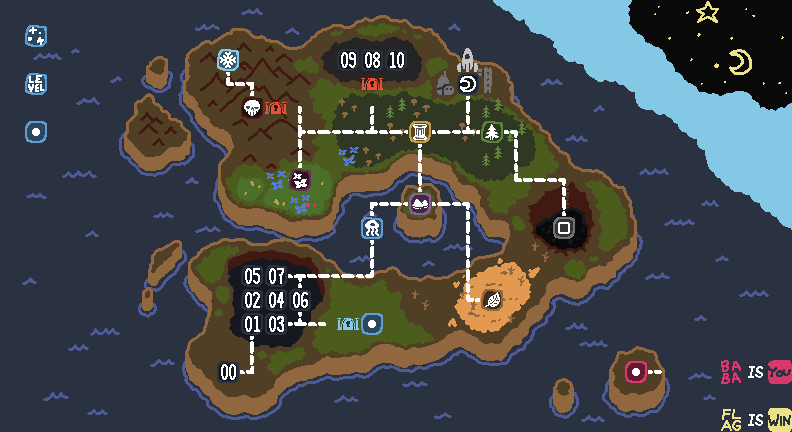

special? special?
special? special?This game is a fantastic puzzle game that does a fantastic job of boiling you like a frog until you are solving the fantastic final area and sit back and go (fantastically) "This game is stupid."
Baba is You does a (one more time, for the road) fantastic job of slowly introducing you to all its mechanics. Not only does it introduce new tile behaviors you can mess around with, new syntax pieces to make new and more-fucked-up-then-ever-before rules, and new techniques to use by combining or stacking behaviors or tiles, it also introduces entirely new diseases downloaded directly to your brain. It's got excellent, very sneaky puzzle design that at some points will get you cackling and going "How the fuck did that work! I'm so glad that works that way!"
It's a very good game.
This page is about what makes Baba is You is special, and I've told you just about everything I can whilst also avoiding telling you about The Biggest Thing. Understand that if I tell you about The Biggest Thing I worry that I will spoil the game for you, because a large part of the enjoyment I derived from the game was from continuing to discover The Biggest Thing.
This is all I will say: EVERYTHING follows the rules, no matter what. And also that there is a reason there are rules on the world map.

If you're looking for a very fun and silly puzzle game, check out Baba is You. It gets very hard in places, but you don't need to beat every level to beat the game—in fact, most levels are optional. If you're still worried about not being able to get through the game, check out the excellent per-level hints by keyofw or the many level walkthroughs available on Youtube. It's ok to use them, I needed them too.
Ok you can stop here now if you want. The rest of this shrine will be Hempuli fangirling.